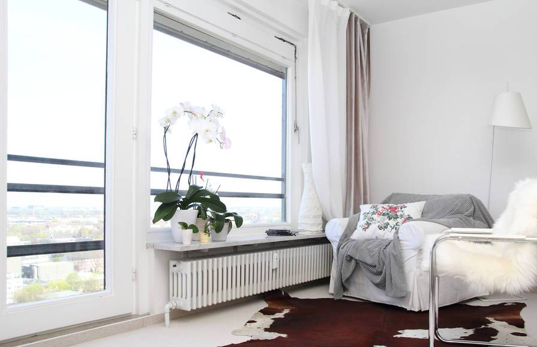
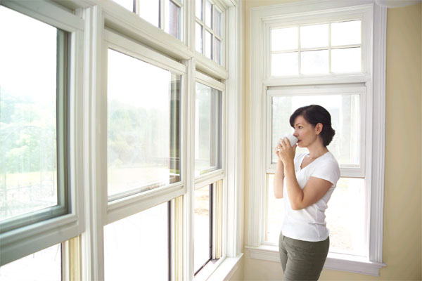
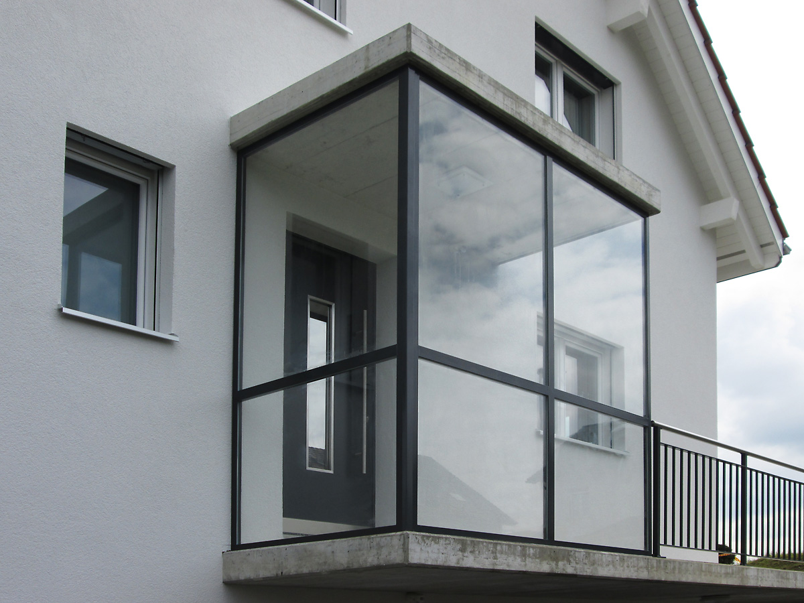
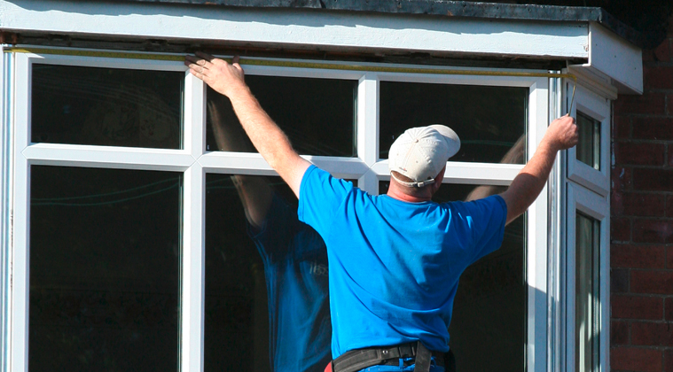
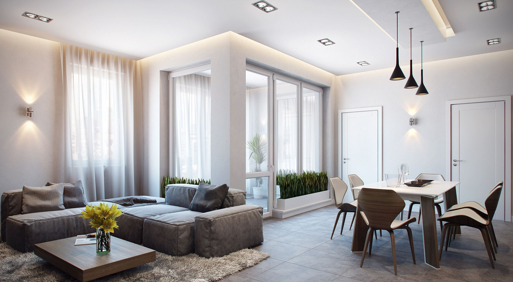

Остекление и утепление лоджий и балконов





Остекление и утепление лоджий и балконов
Остекление и утепление лоджий и балконов
Балконы и лоджии являются равноправными частями квартир или домов, которые в любой момент можно превратить в отдельные маленькие комнаты, «террасы» для отдыха, офисы или мини оранжереи с цветами. После остекления и утепления некоторые даже расширяют пространство своих квартир, снося перегородки между балконами и комнатами. В современном мире можно воплотить в жизнь практически любую дизайнерскую задумку, насколько это позволит тип Вашего дома и планировка в квартире. Благодаря новейшим технологиям остекления и утепления лоджий и балконов температура там даже в самую морозную зимнюю погоду становится комнатной, тепло сохраняется, а сквознякам и холодному воздуху не удается найти ни единой щели, чтобы проникнуть внутрь. Вы лишаетесь дополнительных возможностей для продувания ветрами Вашей квартиры через балкон или лоджию и приобретаете полноценную жилую площадь.
Если вы приобрели собственную квартиру в новостройке с имеющимся остеклением, мы предлагаем Вам заменить холодное остекление на теплое, учитывая все особенности строения и фасада дома. Если у Вас имеется жилье в доме с планировкой и архитектурой прошлых веков и очень маленькими балконами, мы выполним остекление балкона в соответствии с нормами и разрешениями, либо сделаем внешнюю и внутреннюю отделку. Дома со старыми разбитыми балконами можно часто наблюдать в городах, их бывает много особенно в спальных районах, люди не хотят тратить средства и силы на ремонт столь маленькой площади. А, возможно, стоило бы!
Наши специалисты накопили огромный опыт превращения балконов или лоджий в продолжения комнат. Поэтому Вы можете смело обращаться за консультацией, мы оценим Ваш случай и дадим техническую консультацию, а остальное зависит от Ваших желаний и фантазии. Сейчас остекление и утепление лоджий и балконов не только надежно защищает от холода, но и становится очень популярным и современным решением в вопросах создания интерьера.